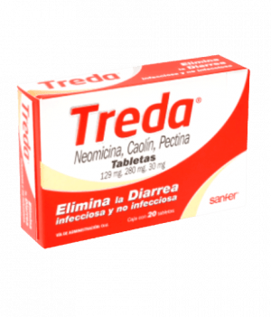

| inicio |
ventas |
$50 |
$151 |
$246 |
$153 |
$186 |
$65 |
|  $131 |
PARA QUE SIRVE Los
medicamentos antidiarreicos sirven para tratar la diarrea aguda. Su consumo no es recomendable en casos de gastroenteritis, ya que dificultará la expulsión del virus o bacteria. En las diarreas se elimina mucho líquido y puede existir riesgo de deshidratación, por lo que se debe consumir suero oral (nunca bebidas para deportistas) para restablecer los niveles de electrolitos. |
|